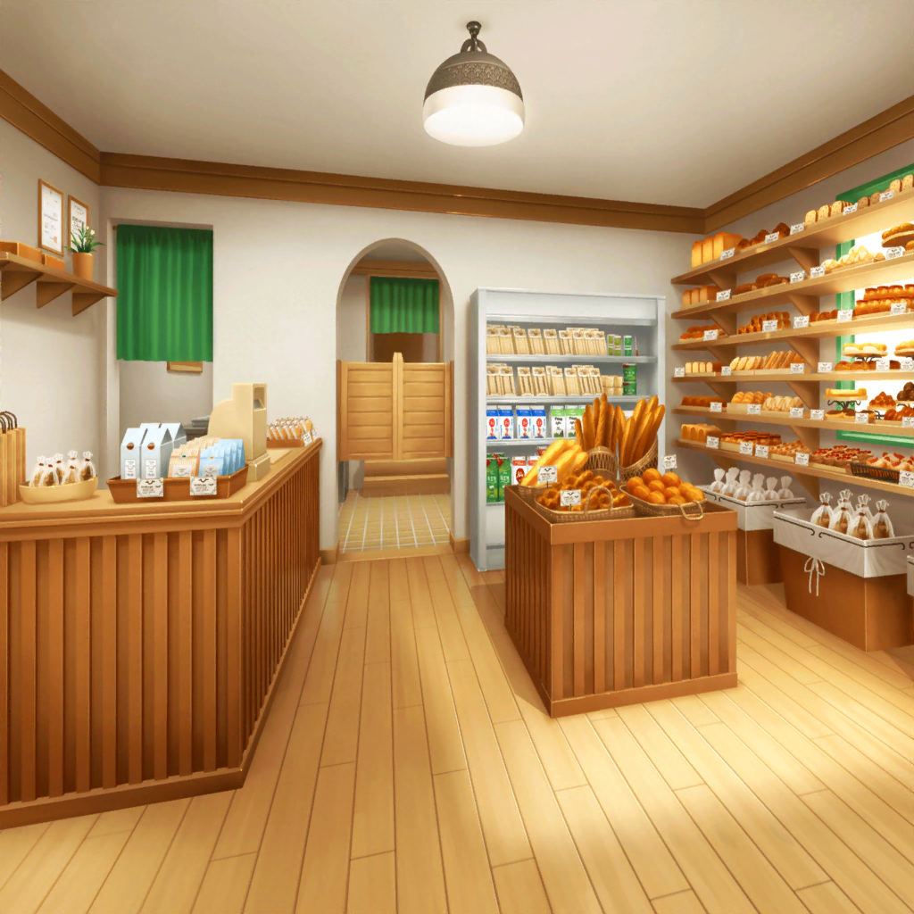

沙綾
いらっしゃいませー……あっ、{{userName}}さん！
沙綾
いつもありがとね。今日は何にする？
沙綾
オススメ？ そうだねえ……
沙綾
ソーセージロールはどう？
焼きたてだよっ
沙綾
あ、それにするんだね。
ＯＫ、２点で３４０円ですっ
沙綾
はい、おつり６０円ね
沙綾
……ん、なになに？
ナツキやフミカと話したの？
沙綾
そうなんだ～。ふたりとも面白い子でしょ？
沙綾
あなたは、
『ＣＨｉｓＰＡ』のライブって見たことある？
沙綾
そっか、ないんだ。
演奏めちゃめちゃかっこいいし、雰囲気あってすごいよ～！
沙綾
ナツキもフミカも、元々上手だったけど、
最近またどんどんレベル上がってて
沙綾
あれはかなり練習してるよね。
負けてられないなー
沙綾
そうそう、新しく入ったドラムの子もすっごく上手なんだ
沙綾
私がやってた頃とは、またバンドのイメージが変わってて、
ホントかっこいいんだ！
沙綾
一度見た方がいいよ。絶対ファンになっちゃうって！
沙綾
……あっ、ごめんね、はしゃいじゃって。あはは
沙綾
そのくらい、素敵なバンドなんだ
沙綾
あっ、でも、私達ポピパも負けないぐらい、頑張ってるよ
沙綾
毎日練習してるし……
最初のころより、ずっと良くなってきたよ
沙綾
ライブのために、練習合宿もしたんだ
沙綾
楽しかったな～、合宿
沙綾
ポピパのみんなでね、有咲の家に泊まりに行ったんだけど
沙綾
夜遅くまで枕投げしたり、お話したり。
ガールズトークっていうのかな？ ふふ
沙綾
パジャマパーティー……ううん、
ちょっと修学旅行みたいな感じだった
沙綾
ん。なあに、その顔
沙綾
遊んでばっかりで練習してない、って思った？
練習もちゃんとしたよ
沙綾
有咲んちの蔵で、
夜遅くまで、長時間みっちりね
沙綾
練習のときは、香澄も集中しててさ
沙綾
りみりんも、いつもより熱心だったね。
本当にガッツあるなって思う
沙綾
特に厳しいのはおたえ！
納得がいくまで何度でも繰り返すの
沙綾
最後の方なんて、有咲がへばっちゃって
沙綾
『これ以上続けたら、死ぬ！』って。
あはは
沙綾
実際ハードだったよー。私もヘトヘト
沙綾
まぁ、そういうのが楽しいんだけどね
沙綾
みんなで全力でがんばって、時にはふざけあって
沙綾
そういう仲間と一緒にバンドができるのって、
幸せだなーって思うな
沙綾
青春、って感じするじゃん
沙綾
ナツキたちも『ＣＨｉｓＰＡ』で
仲良くやってるみたいで、安心したよ
沙綾
安心……っていうのも変かもしれないけど……
沙綾
でも、あんなにいいバンドなんだもん。
うまくいくに決まってるよね
沙綾
音楽を通して、バンドの仲間と絆を深める。
ステキなことだよね
沙綾
ううん、バンドだけじゃない。
他の人ともつながって、仲良くなれるといいな
沙綾
……だから、あなたとも、ね
沙綾
うん。もっと仲良くなれたらうれしいかな。
これからも、よろしくね
沙綾
……って、ずいぶん引き止めちゃったね
沙綾
バンドの話になると、止まらなくなっちゃって。
ごめんごめん
沙綾
楽しかった？ ほんと？
バンドの話でよかったらいつでもするよ
沙綾
パンも買ってくれるとうれしいけど。
……なーんてね
沙綾
それじゃ、いつもありがとう♪
沙綾
また来てね